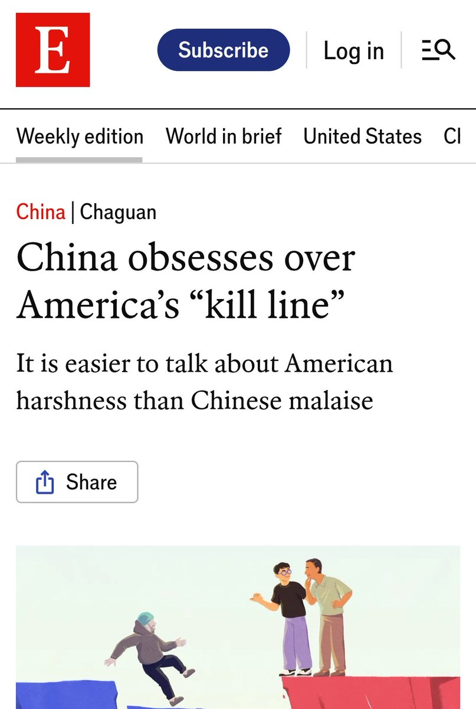
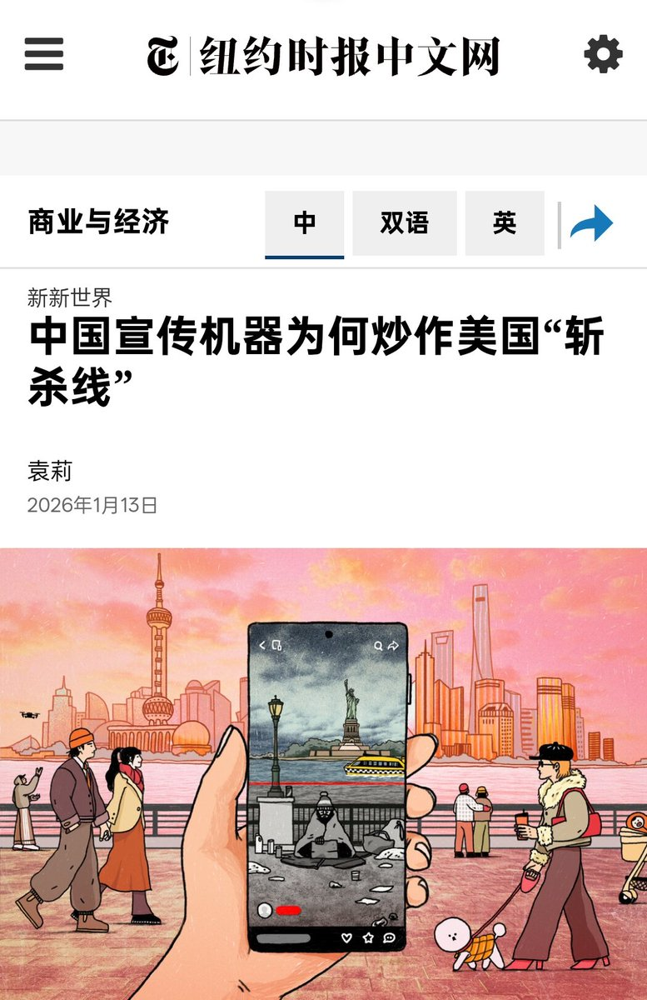

鸿哎彬
@hongaibin
RT @USA_Silly: 牢A也算是“功成名就”了，“斩杀线”理论继登上《求是》之后，又被美国《纽约时报》和《经济学人》两大媒体报道。
不过网友发现，美国这两家媒体报道撰写的编辑都是亚裔润人，看起来某些东西确实很着急了😅


「米日🔞糗事」
@USA_Silly
牢A也算是“功成名就”了，“斩杀线”理论继登上《求是》之后，又被美国《纽约时报》和《经济学人》两大媒体报道。
不过网友发现，美国这两家媒体报道撰写的编辑都是亚裔润人，看起来某些东西确实很着急了😅 https://t.co/fKKD6Z3Aqt